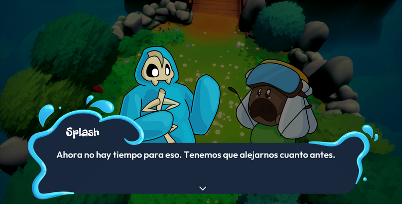
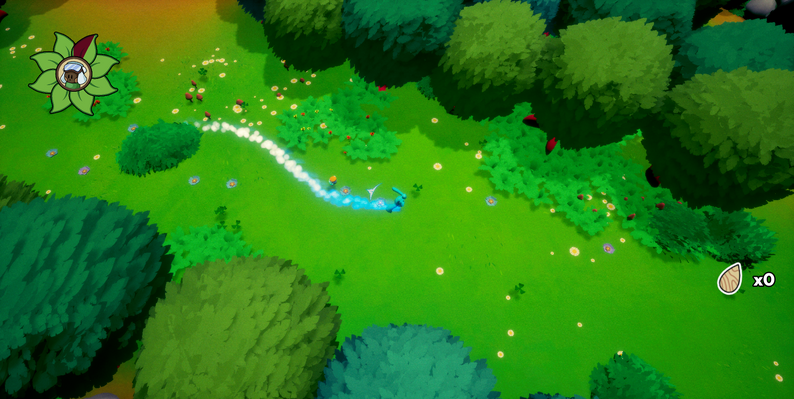
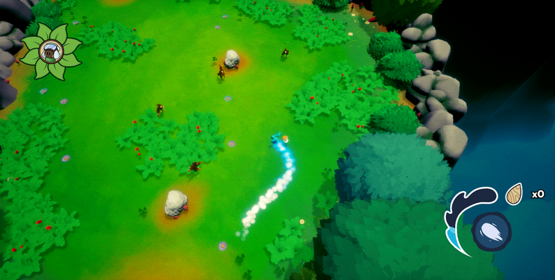
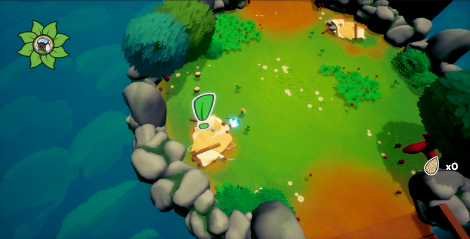

Este es un juego de acción-aventura donde el jugador controla a un Goteao llamado Splash que acompaña a un Fertilizao llamado Splinter. Durante su travesía, habrá una tribu de Fogosos que tratará de acabar con Splinter y el deber del jugador será protegerlo. El jugador avanzará por niveles compuestos por varias salas interconectadas que combinan secciones de exploración con diálogos y secciones de combate.
El jugador podrá eliminar a los enemigos chocando de forma directa con ellos. Además, en el juego se utiliza un sistema de físicas que utiliza la velocidad para definir el daño que el jugador causa a los enemigos.
Al comienzo del juego el pueblo de nuestros protagonistas es destruido por un grupo de fogosos, el maestro de Splash, Stick, es derrotado y Splash se ve obligado a huir con Splinter. Durante su camino hacia un lugar seguro descubrirán lo sucedido en el resto de los pueblos y conocerán a gente que los ayudará por el camino.
Me encargué de coordinar el equipo de programación del juego, definiendo y asignando las tareas necesarias para la programación del juego.
Elaboré un sistema que permite cambiar el contexto de juego de forma dinámica dentro de un mismo nivel de Unreal Engine. Para ello, englobé todos los diferentes contextos de juego como batallas o diálogos en objetos llamados actividades. Cada actividad se gestiona por sí misma, definiendo las reglas que aplican, las acciones que el jugador puede hacer y la información que mostrar en pantalla. El modo de juego se encarga de cambiar la actividad vigente y de guardar la referencia a dicha actividad.
Las batallas se gestionan por oleadas, en las que aparecen una serie de enemigos en diferentes puntos de la sala. Por cada enemigo que deba aparecer se guarda el tipo de enemigo, el tiempo que tardaría en aparecer desde que la oleada comienza y el punto exacto en el que aparecería. Hasta que el jugador no elimine a todos los enemigos de una oleada, no se pasaría a la siguiente. La batalla finalizaría cuando finalizase la última oleada.
Los diálogos se gestionan por líneas de diálogo, que muestran el mensaje que emite el emisor en la conversación entre los interlocutores. En el diálogo se muestran los sprites de 2 interlocutores, entre ellos, el emisor de la línea de diálogo actual.
He realizado el diseño del nivel que se muestra en la demo publicada del juego. El nivel se compone de varias salas interconectadas que el jugador debe explorar para encontrar el final del nivel y llevar a Splinter a salvo hasta allí.
Este se trata de un nivel introductorio que busca enseñar al jugador las mecánicas principales presentes en el juego e introducir el contexto de la historia del juego. Con la composición de las salas del nivel se buscaba que fuese accesible para jugadores novatos y atractiva para jugadores experimentados.
He realizado el diseño del nivel que se muestra en la demo publicada del juego. El nivel se compone de varias salas interconectadas que el jugador debe explorar para encontrar el final del nivel y llevar a Splinter a salvo hasta allí.
Este se trata de un nivel introductorio que busca enseñar al jugador las mecánicas principales presentes en el juego e introducir el contexto de la historia del juego. Con la composición de las salas del nivel se buscaba que fuese accesible para jugadores novatos y atractiva para jugadores experimentados.
He elaborado herramientas que han servido para tratar de asegurar la calidad del juego. Por un lado, he creado un modo debug que permite visualizar en mitad del juego todas las características de los personajes principales y las colisiones de los elementos que componen el mapa. Por el otro, se ha creado una forma de registrar en fichero las partidas de los jugadores para posteriormente ser analizadas. Esto con el objetivo de ver aspectos mejorables del nivel.